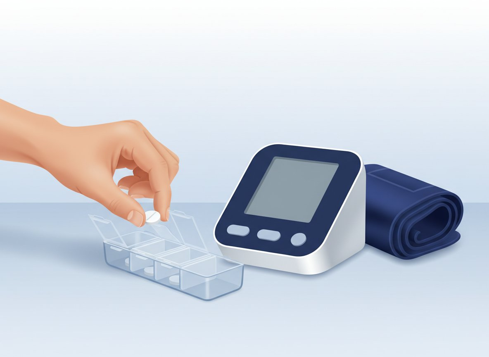

먼저, 이 세 가지를 기억하세요 (Key Numbers)
먼저, 이 세 가지를 기억하세요 (Key Numbers)
1차 목표 · 가정혈압
135/85
mmHg 아래 (개인별 목표는 진료에서 결정)
약 1
mmHg 안팎 하강 (수축기, 평균)
여러 날
평균 — 하루 수치 하나가 아님
 두 가지 목표 — 수치, 그리고 변동 (Two Goals)
두 가지 목표 — 수치, 그리고 변동 (Two Goals)
| 구분 | 핵심 기준 | 설명 및 중요 이유 |
|---|---|---|
| 1차 목표 · 수치 | 가정혈압 135/85mmHg 아래를 기준으로 봅니다. | 동반 질환에 따라 개인별 목표는 진료에서 따로 정합니다. |
| 2차 목표 · 변동을 줄이는 것 | 약을 먹었다 말았다 하면 혈압의 오르내림이 커집니다. | 진료 때마다 혈압이 크게 흔들리는 사람일수록 뇌졸중·심장병 위험이 높다는 연구들이 있습니다. |
 며칠 괜찮았다고 판단하지 마세요
며칠 괜찮았다고 판단하지 마세요

| 규칙적으로 먹어야 하는 이유 · WHY DAILY | |
|---|---|
| 약효 주기 | 1. 하루 안 먹었는데 괜찮았다는 건 근거가 안 됩니다 — 약효가 자리 잡고 빠지는 데는 며칠에서 몇 주가 걸립니다. |
| 안경 비유 | 2. 약을 먹어서 정상인 건 약이 잘 맞는다는 뜻 — 도수 맞는 안경처럼, 잘 보인다고 벗지 않듯 계속 유지합니다. |
| 체중·계절 | 3. 체중이 빠지면 혈압도 내려갑니다(1kg에 약 1mmHg 안팎). 여름엔 낮고 겨울엔 오르는 경향도 있지만, 계절이나 체중만으로 스스로 약을 조절하지는 않습니다. |
 흔한 오해 vs 올바른 접근 (Common Myths)
흔한 오해 vs 올바른 접근 (Common Myths)
| 자주 듣는 오해 · MYTH | 근거 있는 접근 · FACT |
|---|---|
| 1. "아침 혈압이 좋으면 그날은 안 먹어도 된다" | 1. 아침 수치 하나로 그날 약을 거르지 않습니다 — 정해진 시간에 매일 먹습니다 |
| 2. "수치가 좋아지면 끊어도 된다" | 2. 좋은 수치는 약이 잘 맞고 있다는 신호 — 스스로 끊지 않고 진료에서 상의합니다 |
| 3. "안정되면 이틀에 한 번만 먹어도 된다" | 3. 줄여야 할 때도 격일이 아닌 약한 용량으로 매일 — 판단은 여러 날 평균으로 상의합니다 |
| 4. "나이 들면 130~140은 괜찮다" | 4. 나이만으로 목표를 정하지 않습니다 — 개인 목표는 진료에서 정합니다 |